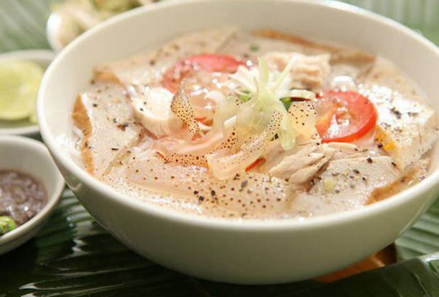

Kinh nghiệm du lịch Nha Trang tự túc
Nằm bên bờ vịnh Cam Ranh (Khánh Hoà), Nha Trang được ví như một “viên ngọc quý của biển Đông” với những bãi biển trải dài hấp dẫn làm say đắm biết bao du khách.
Di chuyển đến Nha Trang
Máy bay: Hiện có rất nhiều hãng hàng không mở tuyến bay khởi hành từ Hà Nội và Hồ Chí Minh đến sân bay Cam Ranh (Nha Trang). Để mua được vé rẻ bạn có thể “săn” các khuyến mãi của các hãng hàng không giá rẻ như Vietjet Air và Jetstar trên website của hãng hoặc đặt trước vài tháng.
Sân bay Cam Ranh cách trung tâm thành phố Nha Trang khá xa (35km) nên để tiết kiệm chi phí, bạn có thể đi xe bus sân bay vào trung tâm hoặc chọn đi taxi nếu đi theo nhóm đông.
Xe khách: Đây cũng là một phương tiện tiết kiệm để di chuyển tới Nha Trang.
- Từ Hà Nội: Bạn có thể chọn xe giường nằm của hãng Hoàng Long với giá vé 620,000đ/chiều/giường và thời gian di chuyển hơn 26 tiếng.
- Từ Sài Gòn: Có nhiều lựa chọn về hãng xe hơn, giá vé dao động từ 180,000 – 230,000đ/chiều/giường với thời gian di chuyển từ 7-8h. Bạn có thể chọn chuyến khởi hành vào tối muộn, nằm trên xe ngủ một giấc là đã đến nơi.
Tàu hỏa
- Từ Hà Nội: Nếu thích ngắm cảnh trên đường đi, bạn có thể chọn đi tàu từ Hà Nội đến Nha Trang có giá vé dao động từ 500,000 – 1,400,000đ/người/lượt tuỳ theo loại khoang tàu với thời gian di chuyển từ khoảng 24-28 tiếng.
- Từ Sài Gòn: Vé tàu dao động từ 200,000 – 600,000đ/người/lượt tuỳ theo loại khoang tàu với thời gian di chuyển
Lịch trình đi chơi tại Nha Trang
Nha Trang không chỉ có những bãi biển đẹp lung linh mà còn có nhiều địa điểm du lịch giải trí, văn hoá và nhiều hòn đảo thiên đường có tiếng. Hãy tham khảo lịch trình du lịch Nha Trang tự túc dưới đây để có một trải nghiệm Nha Trang thật trọn vẹn nhé!
Ngày 1: Bãi biển Nha Trang – Tháp Bà Ponagar – Hòn Chồng – Chợ Đầm – Chợ Đêm Nha Trang
Ngày đầu đến với thành phố Nha Trang xinh đẹp, bạn sẽ được thăm quan một loạt các địa điểm du lịch ngay trong trung tâm thành phố Nha Trang. Hãy chạy ngay ra bãi biển Nha Trang ngay dọc đường trung tâm Trần Phú để tận hưởng không gian biển xanh, cát trắng, nắng vàng vô cùng rực rỡ. Biển Nha Trang khá kín nên không có nhiều sóng lớn, mang lại vẻ đẹp hiền hoà dịu êm giữa không gian biển trời xanh mát.
Tiếp đến, hãy lấy xe máy ‘vi vu’ thăm quan Tháp Bà Ponagar chỉ cách vài km. Nằm trên một ngọn đồi nhỏ và bên bờ dòng sông Cái thơ mộng, Tháp Bà Ponagar là một quần thể kiến trúc văn hoá Chăm Pa cổ còn giữ lại được nguyên vẹn cho đến ngày nay. Đến đây, bạn sẽ tha hồ khám phá những công trình kiến trúc cổ và lắng nghe những câu chuyện truyền thuyết và sự tích nữ thần Ponagar gắn liền với văn hoá của người Chăm. Giá vé thăm quan là 22,000đ/người.
Từ Tháp Bà Ponagar, đi dọc theo đường 2/4 chỉ hơn 1km là đến Hòn Chồng – Một địa điểm cũng được nhiều du khách yêu thích bởi vẻ đẹp tự nhiên được hình thành từ nhiều lớp đá kỳ thú. Giá vé ở đây cũng là 22,000đ/người và được miễn phí gửi xe. Hãy đến đây để khám phá những tảng đá hoang sơ và tận hưởng một không gian biển trời khoáng đãng, bình yên và trông ra xa để ngắm nhìn thành phố biển Nha Trang xinh đẹp nhé.
Sau khi trở về, bạn có thế ghé thăm Trung tâm mua sắm Nha Trang – Chợ Đầm để mua sắm cũng như thưởng thức các món ăn đặc sản Nha Trang cực kì ngon.
Khi tối đến, hãy hoà mình trong không khí náo nhiệt và sôi động của Phố đi bộ – Chợ Đêm Nha Trang và đi dạo dọc theo bờ biển, tận hưởng những làn gió biển mát rượi.
Ngày 2: Vinpearl Land
Bạn hãy nạp năng lượng bằng một bữa sáng đầy đủ tại khách sạn rồi có thể di chuyển tới Vinpearl Land bằng xe máy hoặc taxi. Để tiết kiệm thời gian không phải chờ xếp hàng dài lại còn được giá vé rẻ hơn, bạn nên “săn” deal vé Vinpearl Land trên mạng từ khi chuẩn bị kế hoạch đi Nha Trang nhé.
Sau khi đi trên tuyến cáp treo trên biển dài nhất thế giới và chiêm ngưỡng thành phố Nha Trang từ trên cao, bạn sẽ dành cả ngày tham gia vào vô vàn các trò chơi và hoạt động thú vị tại khu vui chơi giải trí hàng đầu Việt Nam này. Hãy tự mình khám phá thế giới giải trí Vinpearl Land Nha Trang, tham gia các trò chơi mạo hiểm thú vị, hay hoà mình vào làn nước mát lạnh sảng khoái trong công viên nước rộng lớn với nhiều hoạt động cực sôi động. Ngoài ra, Vinpearl Land còn có một Thuỷ cung hiện đại cho bạn những trải nghiệm khám phá một “đại dương thu nhỏ” cực kì độc đáo. Nếu đã thấm mệt, hãy dừng chân nghỉ ngơi tại làng ẩm thực và đừng bỏ lỡ tiết mục biểu diễn nhạc nước đặc sắc diễn ra vào 7h-7h25 tối nhé!
Ngày 3: Hòn Tằm - Hòn Mun
Hòn Tằm
Đến ngày thứ 3, bạn sẽ đi thăm các hòn đảo xinh đẹp trong vịnh Nha Trang. Cách trung tâm thành phố Nha Trang không xa, đảo Hòn Tằm là một điểm đến nghỉ dưỡng lý tưởng cho du khách với vẻ đẹp thuần khiết, nguyên sơ trong một vùng biển bốn mùa trong xanh. Để đến được đây, bạn có thể thuê vé tàu ca nô đi ra đảo với thời gian di chuyển chỉ 20 phút. Tại nơi đây, bạn sẽ được thư giãn trong không gian Đảo Hòn Tằm thơ mộng và lãng mạn giữa dòng biển tĩnh lặng, mang lại cảm giác vô cùng thanh bình và yên ả.

Hòn Mun
Hãy tiếp tục di chuyển bằng ca nô và lên đường khám phá Đảo Hòn Mun không xa. Hòn Mun là một đảo đẹp và thơ mộng nhất trong hệ thống đảo ở Vịnh Nha Trang. Đến đây, bạn không chỉ được hoà mình trong làn nước biển trong xanh mà còn được lặn biển để ngắm nhìn những rặng san hô tuyệt đẹp rực rỡ trong lòng đại dương.
Ngoài những hòn đảo xinh đẹp trong vịnh Nha Trang, những ngày còn lại bạn có thể di chuyển đến bến tàu và thuê ca nô đi những đảo xa hơn, tự khám phá đảo Điệp Sơn với con đường đi giữa biển “độc nhất vô nhị” ở Việt Nam hoặc di chuyển tới Cam Ranh và chiêm ngưỡng “tứ bình” nổi tiếng của Vịnh Cam Ranh: Bình Ba – Bình Hưng – Bình Lập – Bình Tiên.
các địa điểm ăn uống Nha Trang
Hải Sản
Đến du lịch Nha Trang tự túc mà không thưởng thức những món ăn hải sản tươi ngon thì quả thật là tiếc. Các loại hải sản ở nơi đây vô cùng đa dạng, phong phú và được chế biến ngon miệng nhiều kiểu khác nhau. Bạn có thể tham khảo một số các địa chỉ ăn hải sản bình dân giá rẻ mà ngon có tiếng như: Hải sản Bình Dân: số 6 Ngô Sĩ Liên, Quán Hoa Biển – gần bùng binh phía Bắc cầu Trần Phú, Hải Sản Bình dân Nhà Tôi: số 4 Ngô, Hải sản Làng Chài Nha Trang: gần cảng Bảo Đại, Quán Bờ Kè: 42B Cù Lao Trung (phía Bắc cầu Trần Phú)
Bún chả cá
Được chế biển từ chả cá làm từ loại các loại cá tươi ngon, dai, ăn kèm với với bún sợi nhỏ và nước dùng trong, thanh ngọt từ xương cá, bún chả cá là một món ăn nổi tiếng ở Nha Trang mà bạn chắc chắn không thể bỏ qua. Bạn có thể tìm thấy các quán bún chả cá trong chợ Đầm (phố Lý Quốc Sư), chợ Xóm Mới (phố Ngô Gia Tự),…
Bún sứa
Là một loại bún lạ miệng ở Nha Trang, bún sứa có có vị mát lạnh, giòn giòn sần sật của sứa trong nước dùng ngọt thanh, tạo nên vị ngon tuyệt vời. Bạn có thể thưởng thức món ăn đặc trưng của thành phố Nha Trang này tại bún sứa Năm Beo (B2 chung cư Phan Bội Châu) hoặc trong các quán nhỏ tại chợ Đầm, chợ Xóm Mới,…
© 2021 Mollyclo. All Rights Reserved.
VỀ MOLLYCLO
- Về chúng tôi
- Mollyclo Blog
- Hợp tác cùng chúng tôi
- Cơ hội nghề nghiệp
ĐỐI TÁC
- Đối tác đăng nhập
- Đối tác liên kết
- Chương trình cho người nổi tiếng
- Chương trình cho Đại lý
ĐIỀU KHOẢN SỬ DỤNG
- Điều khoản sử dụng
- Quyền riêng tư
- Chính sách Cookie
- Thưởng phát hiện lỗi phần mềm
- Chính sách và quy định
KÊNH THANH TOÁN